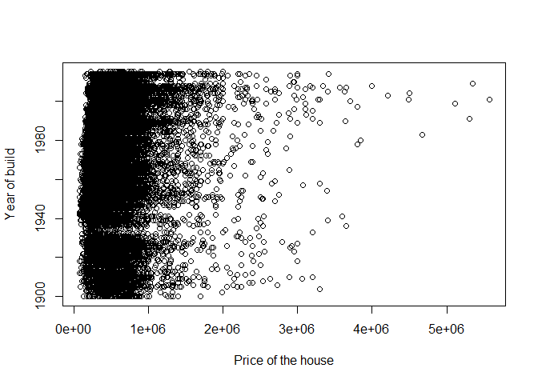

The GEO712PACKAGE is a test R package created for the GEO712 course at McMaster University. In this R package we share the processed data of a multiple regression model. We use data from Kaggle, named “House Sales in King County, USA”, to predict house price using a regression model. The data set contains house sales prices for King County, which includes Seattle. It includes homes sold between May 2014 and May 2015, with 21,613 registers and 21 variables regarding the houses sold.
Installation
You can install the development version of GEO712PACKAGE from GitHub with:
# install.packages("devtools")
devtools::install_github("dias-bruno/GEO712PACKAGE")Example
This is a basic example which shows you how to access the data files. First, we’ll need call the library “GEO712PACKAGE:
Accessing the data:
data(df)
houses <- dfVisualizing the summary of the data:
summary(houses)
#> price bedrooms bathrooms sqft_living
#> Min. : 75000 Min. : 0.000 Min. :0.000 Min. : 290
#> 1st Qu.: 321500 1st Qu.: 3.000 1st Qu.:1.750 1st Qu.: 1425
#> Median : 450000 Median : 3.000 Median :2.250 Median : 1910
#> Mean : 539157 Mean : 3.369 Mean :2.114 Mean : 2079
#> 3rd Qu.: 645000 3rd Qu.: 4.000 3rd Qu.:2.500 3rd Qu.: 2550
#> Max. :5570000 Max. :11.000 Max. :8.000 Max. :13540
#> sqft_lot floors waterfront view
#> Min. : 520 Min. :1.000 Min. :0.000000 Min. :0.0000
#> 1st Qu.: 5040 1st Qu.:1.000 1st Qu.:0.000000 1st Qu.:0.0000
#> Median : 7617 Median :1.500 Median :0.000000 Median :0.0000
#> Mean : 15105 Mean :1.494 Mean :0.007497 Mean :0.2339
#> 3rd Qu.: 10685 3rd Qu.:2.000 3rd Qu.:0.000000 3rd Qu.:0.0000
#> Max. :1651359 Max. :3.500 Max. :1.000000 Max. :4.0000
#> condition grade sqft_above sqft_basement
#> Min. :1.000 Min. : 1.000 Min. : 290 Min. : 0.0
#> 1st Qu.:3.000 1st Qu.: 7.000 1st Qu.:1190 1st Qu.: 0.0
#> Median :3.000 Median : 7.000 Median :1560 Median : 0.0
#> Mean :3.409 Mean : 7.656 Mean :1788 Mean : 291.2
#> 3rd Qu.:4.000 3rd Qu.: 8.000 3rd Qu.:2210 3rd Qu.: 560.0
#> Max. :5.000 Max. :13.000 Max. :9410 Max. :4820.0
#> yr_built predicted_values
#> Min. :1900 Min. :-609969
#> 1st Qu.:1951 1st Qu.: 342064
#> Median :1975 Median : 479850
#> Mean :1971 Mean : 539157
#> 3rd Qu.:1997 3rd Qu.: 669496
#> Max. :2015 Max. :3126792Now, we already have access to the data and we can create some graphs about the data:
plot(houses$price, houses$yr_built, xlab = "Price of the house", ylab = "Year of build")